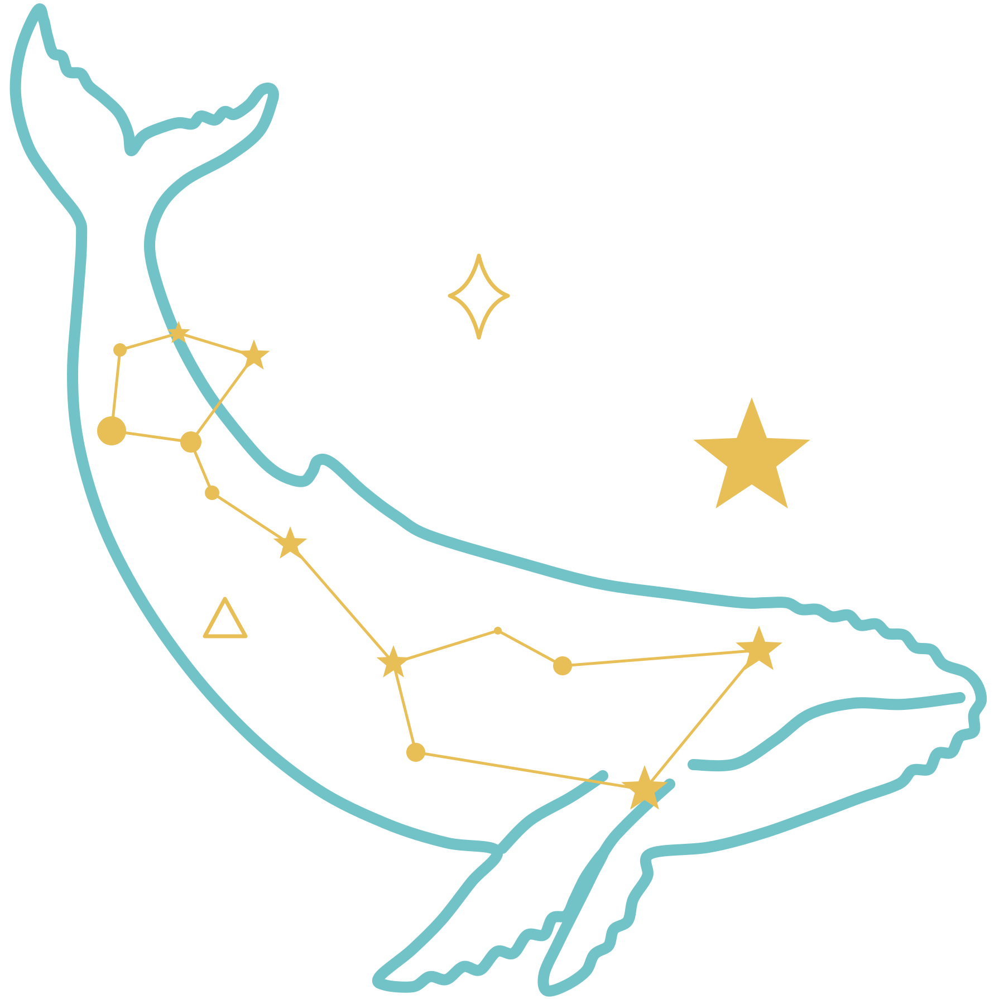

By Yanick Sanchez · Bathymetry: GMRT (LDEO), CC-BY 4.0 · Simulation: whales are simulated; ship traffic in Ships and Mix is real AIS (NOAA MarineCadastre, 14–15 Aug 2024) · About
REPLAYDay 1 · 06:00
Fleet lab
Compare, repeat, and put a price on it

Cetus · whale-aware ship routing (simulation)
Hear the whale. Locate it. Route around it.
Ships kill dozens of blue, humpback and fin whales off California every year, mostly because nobody knows
exactly where the whales are. Today's answer is to slow whole regions to 10 knots. Cetus simulates what changes
if each whale can be located, so a ship can make a small, targeted change instead.
Shipsreal ships as sensors
Mixships + port stations
Buoysa dense hydrophone network
Slow zoneswhat exists today
Watch a real shipping route, Oakland → Long Beach, through real strike hotspots.
See each whale call heard, located and tracked, and every decision explained with its risk, cost, fuel and CO₂.
Choose what the ship does when its own hydrophone hears a whale nobody has located (Ships/Mix): slow down, ask you, or hold speed.
Compare the modes in the Fleet lab: the same whales in every mode, many voyages at once, and the business case. Click the progress bar to replay any moment.
New here? Open the Story tab for the background, and Method for how every number is computed.
Tap any ⓘ for a plain-English explanation.
Space = play/pause · drag to explore · whales are simulated; in Ships and Mix the ship traffic is real (AIS)
Built by Yanick Sanchez · open source (MIT) · code on GitHub